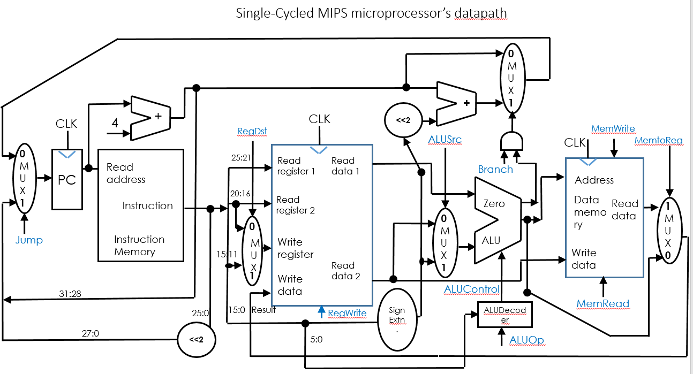
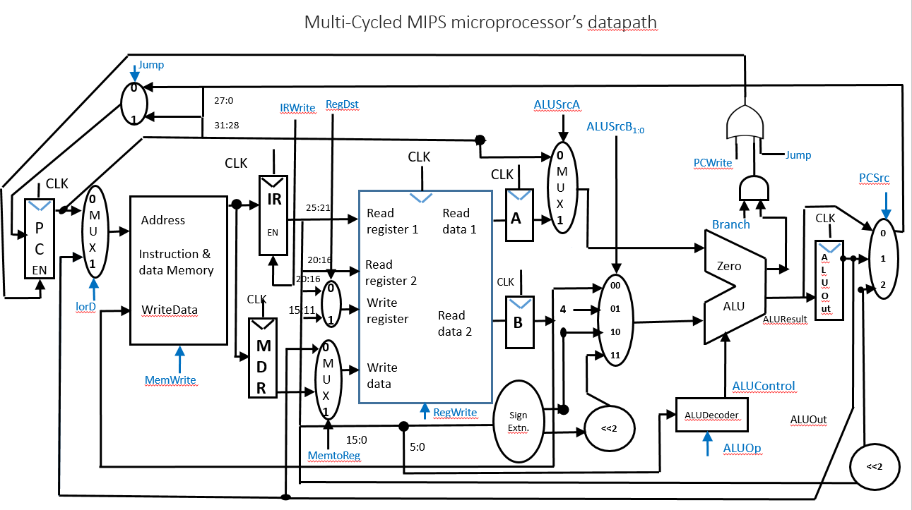
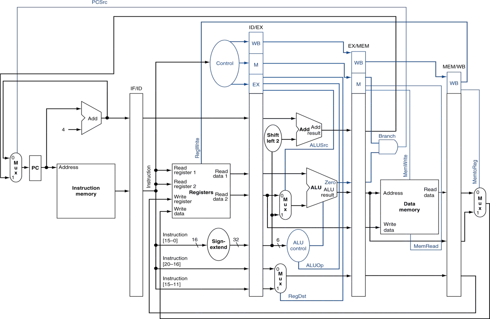
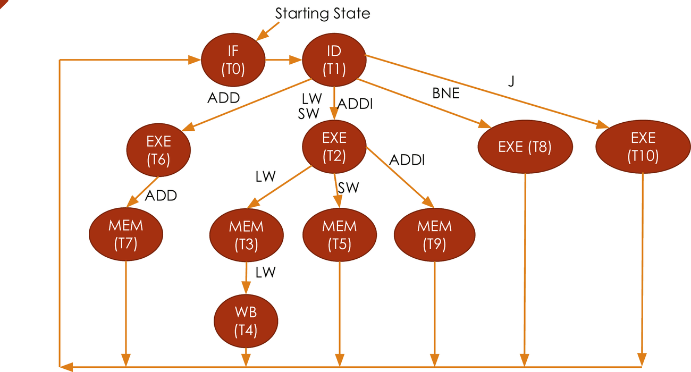
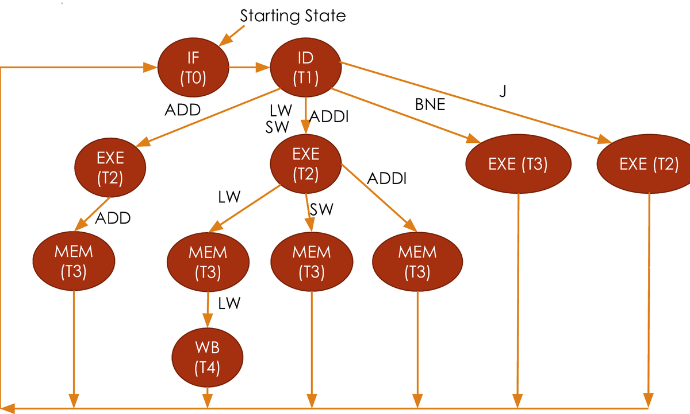
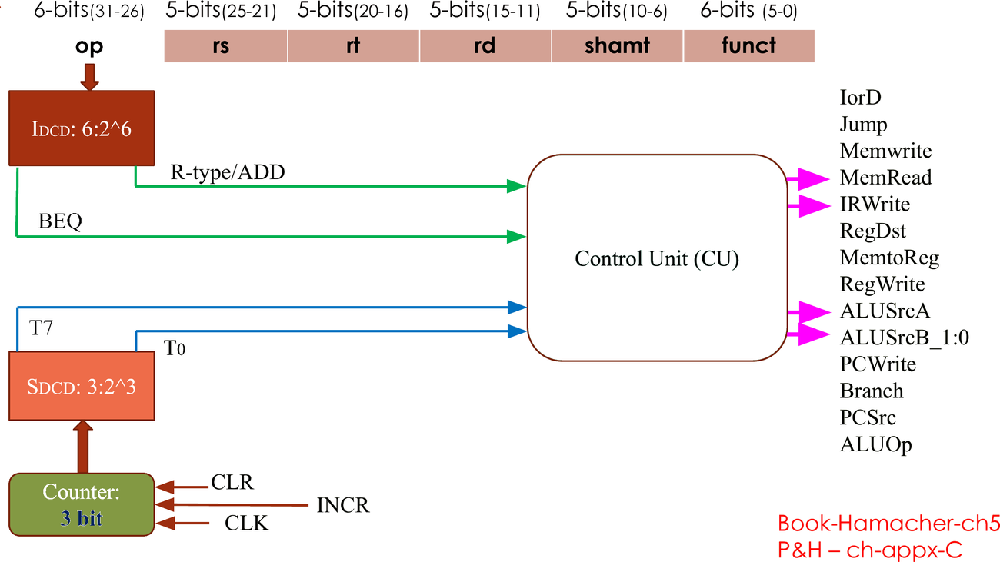
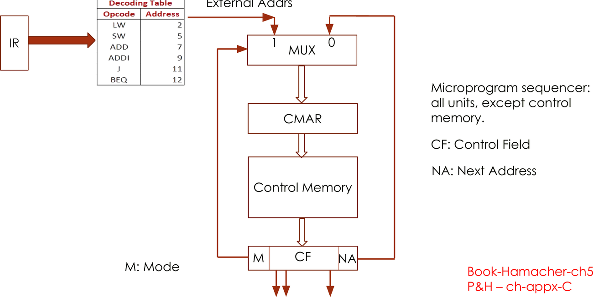
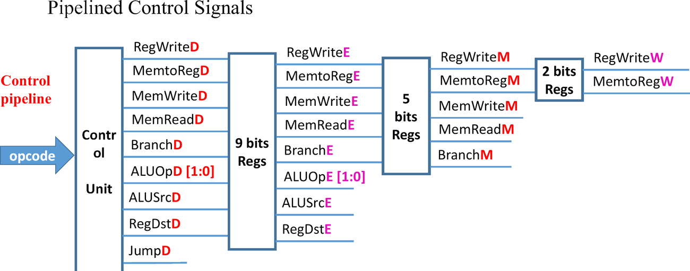
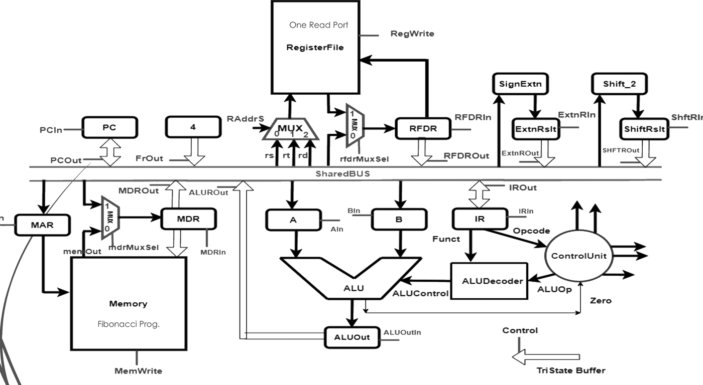
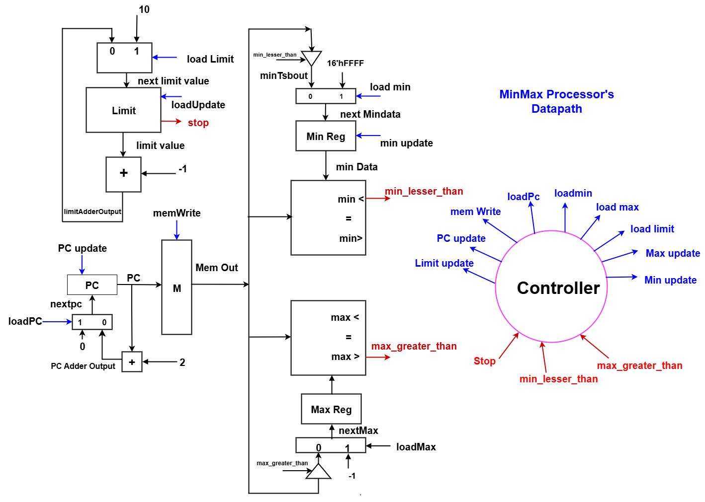

Official key: with only opcode the decoder complexity would increase from 6:26 to 12:212.
Official key: "No next state." In single-cycle MIPS every instr finishes in one clock, so the control unit is purely combinational: no state/memory, its outputs (RegWrite, RegDst, ALUSrc, Branch, MemWrite, MemtoReg, ALUOp, Jump) depend only on the present inputs (opcode, funct). A combinational circuit is completely specified by listing outputs for every input combination = a truth table (one row per opcode), which is then implemented as SOP logic/PLA/ROM. (Multicycle control is an FSM → state table, not truth table.)
Side effects = changes to architectural state: register file, data memory and PC. Combinational logic computes the new values during the cycle; they are captured only at the rising clock edge by state elements whose write enable is asserted: RF written if RegWrite=1 (WD3→reg A3), memory written if MemWrite=1 (WD→M[A]), PC←PC' every edge (multicycle: PCEn). Intermediate results in multicycle/pipeline are held in non-architectural registers (IR, MDR, A, B, ALUOut / pipeline regs) and committed in the write-back step.
| Signal | Malfunction & why |
|---|---|
| MemtoReg≡1 | R-type (add,sub,and,or,slt) & addi: write ReadData (=M[ALUResult]) to reg instead of ALUResult. lw OK; sw, beq, j OK (RegWrite=0). |
| MemtoReg stuck-at-0 | lw only: writes ALUResult (the address RF[rs]+imm) into rt instead of loaded data. All others OK. |
| ALUOp0≡1 | ALUOp 00→01 ⇒ ALU subtracts: lw, sw (address = rs−imm), addi (rs−imm) wrong. beq (01) OK. R-type: 10→11, ALU decoder looks at funct when ALUOp1=1 (11 treated as 1X) → OK (if 11 were undefined, R-type would also fail). j OK. |
| RegDst≡0 | R-type: result written to rt (20:16) instead of rd (15:11) → wrong reg & corrupts rt. lw/addi OK (use rt); sw, beq, j OK (no write). |
Not advisable / no. MIPS reads registers from fixed fields: Read reg1 = rs (25:21), Read reg2 = rt (20:16) for all instrs, so the RF can be read in parallel with decoding. sw and beq must read rt as a source; if R-type wrote rt, its 2nd source would be in rd, so a mux (controlled by decoder) would be needed on Read register 2 → RF read starts only after control decode → longer critical path (+tctrl+tmux). Vice-versa (I-type writing rd) is impossible: bits 15:11 are part of the 16-bit immediate in lw/addi. Hence dest mux (RegDst) is on the write side: rt for I-type, rd for R-type.
No. A single-purpose processor executes one fixed algorithm; the algorithm is hard-coded in the controller FSM which directly sequences the datapath control signals each state. There is no program/instruction memory, no fetch and no decode, so no opcode. Only status inputs (e.g., comparator outputs) feed the controller. Opcode is needed only in general-purpose (programmable) processors.
| Single-cycle | Multi-cycle |
|---|---|
| Combinational (truth table): signals = f(opcode,funct) | Sequential FSM: state reg + next-state logic + output logic; signals = f(state) (Moore), next state = f(state, opcode) |
| Signals constant for whole (long) cycle; CPI=1 | Signals change every state; CPI 3–5 |
| Signals: RegDst, RegWrite, ALUSrc, Branch, MemWrite, MemtoReg, ALUOp, Jump | Adds IorD, IRWrite, PCWrite, ALUSrcA, ALUSrcB[1:0], PCSrc[1:0]; enables for PC/IR |
| Separate I/D memories & adders → no sequencing | Shared memory & ALU reused across states |
| Only hardwired | Hardwired FSM or microprogrammed (#9) |
| Control table: Jump, RegDst, RegWrite, ALUSrc, Branch, ALUOp, MemRead, MemWrite, MemtoReg (R3) | States T0 IF, T1 ID, T2 EXE(lw/sw/addi), T3 MEM(lw), T4 WB(lw), T5 MEM(sw), T6 EXE(R), T7 WB(R), T8 EXE(beq), T9 WB(addi), T10 J (R7) |
Hardwired (prof): states generated by a 3-bit counter (CLK, INCR, CLR; not loadable) + state decoder SDCD 3:8 → T0…T7, common to all instrs (T0 IF, T1 ID, T2 EXE, T3 MEM/WB, T4 WB); IDCD 6:64 decodes opcode; each control = SOP of Ti·instr (e.g. MemWrite = T3·SW, Jump = T2·J); INCR = T0+T1+T2·LW+T3·LW+T2·SW…, CLR = T4·LW+T3·SW+… returns to T0 (see R7b). (Classic FSM form: 4-bit state register + next-state logic S' = f(S, opcode).)
Microprogrammed (prof): each state = one microinstruction [M | CF | NA] in control memory; state = address held in CMAR (µPC). Next state: NA field of current word (Mode=0) or, in Decode (Mode=1), the external address from the decoding table indexed by IR opcode (LW→2, SW→5, ADD→7, ADDI→9, J→11, BEQ→12), selected by a MUX into CMAR; last word of each instr has NA=0 (Fetch) (see R7, R7c). Control signals are read directly from the µinstr bits. Easy to modify, slower; hardwired faster.
Main decoder: opcode(6) → RegWrite, RegDst, ALUSrc, Branch, MemWrite, MemtoReg, Jump, ALUOp[1:0]. ALU decoder: ALUOp(2)+funct(6) → ALUControl. Benefits: (1) smaller logic: a monolithic controller would have 12 inputs (212=4096 rows) vs 26+28; (2) faster & simpler to design/verify; (3) modular: adding an R-type instr only changes the ALU decoder; ALU decoder reused in multicycle & pipeline; (4) funct only matters for R-type, so it isn't routed into the main decoder.
Yes. Single-cycle: PC has no enable — every instruction completes in 1 cycle, so PC←PC' at every clock edge. Multicycle: an instr takes 3–5 cycles and the PC (memory address, PC+4, branch target computations) must hold its value during intermediate states, so PC has an enable: PCEn = PCWrite + Branch·Zero (+ Jump in prof's datapath: OR gate of PCWrite, Jump, Branch·Zero). PCWrite=1 only in Fetch (PC←PC+4); Branch·Zero in beq state; Jump in J state.
(Graded 2025: "no register/storage to hold the fetched instruction while the same memory is used for data" earned 2/2; "add A, B regs" got 0.5 — not for single cycle.) A single-ported memory has one address port and one read/write data port → only one access per cycle. Single-cycle lw/sw need instruction fetch AND data read/write in the same cycle → resource (port) conflict. Fix: separate instruction memory and data memory (Harvard; split I-cache/D-cache) — or a dual-ported memory; (multicycle instead reuses one memory in different cycles with the IorD mux).
e.g. RegWrite=1 with MemWrite=1 (during sw): memory is written correctly but the RF also writes Result (ALUResult = address, or garbage ReadData) into register rt/rd (whatever RegDst selects) → the source register (rt) being stored gets corrupted. Others: Branch=1 & Jump=1 (two PC sources, Jump mux overrides → wrong PC); MemtoReg=1 with MemRead=0 (writes undefined data).
Problem (slides 30–31): 10 control lines are needed in later stages, but while instr i is in EX, instr i+1 is being decoded → if controls are not stored, i+1's controls overwrite i's (erroneous signals).
Setup tsetup: min time D must be stable before the clock edge. Hold thold: min time D must stay stable after the edge. Path R1 → combinational logic → R2:
Setup: data launched at edge 0 arrives at R2 latest at tpcq+tpd; must arrive tsetup before next edge: Tc ≥ tpcq + tpd + tsetup ⇒ tpd ≤ Tc − (tpcq+tsetup) (sequencing overhead).
Hold: new data launched at the same edge must not reach R2 before thold; earliest arrival tccq+tcd: tccq + tcd ≥ thold (independent of Tc; fix by adding buffers). With clock skew: Tc ≥ tpcq+tpd+tsetup+tskew; tccq+tcd ≥ thold+tskew. (pcq/pd = propagation = max; ccq/cd = contamination = min.)
[official key ✓] Reg fields 5→7 bits, opcode 6→8 bits, I-type imm field reduced. Reg fields: log2128 = 7 bits (was 5). 4× instrs → opcode 6→8 bits (and funct 6→8 if R-types also ×4).
R-type: op 8 + rs 7 + rt 7 + rd 7 + shamt 5 + funct 8 = 42 bits (+10). I-type: op 8 + rs 7 + rt 7 + imm 16 = 38 bits (+6).
If instruction must stay 32-bit: I-type imm shrinks to 32−8−14 = 10 bits (smaller constants/branch range); R-type has only 32−8−21 = 3 bits left for shamt+funct → must drop shamt/shrink funct or use more opcodes. Effects: bigger/slower RF, bigger decoder, fewer bits for constants.
Cycle 5: I1 in WB, I2 MEM, I3 EX, I4 in ID, I5 IF. RF is written in 1st half of cycle (by I1) and read in 2nd half (by I4, which reads its rs & rt fields). (Prof: RF written @posedge, stage registers @negedge ⇒ write completes before I4's read is latched.)
| Program (I1 … I5) | Written | Read (by I4) |
|---|---|---|
| 21: or R2,R4,R5 / sw R5,72(R0) / sub R0,R1,R2 / lw R3,15(R1) / addi | R2 (or) | R1 (base; R3 on RD2 unused) |
| 22: or $t2,$t4,$t5 / sub / sw / addi $t1,$t1,50 / lw | $t2 | $t1 [official key ✓] |
| 23,24: or $t2,$t4,$t5 / sw / addi / lw $t3,15($t1) / sub | $t2 | $t1 ($t3 unused) |
| 25: addi $t1,$t1,50 / lw / or / sw $t5,72($t0) / sub | $t1 | $t0, $t5 |
(Graded 2025, full marks: cycle 5 — SUB IF, SW ID reads $t0 (and $t5), OR EX, LW MEM, ADDI WB writes $t1.)
c1 c2 c3 c4 c5 I1 IF ID EX MEM WB ← writes (1st half) I2 IF ID EX MEM I3 IF ID EX I4 IF ID ← reads (2nd half) I5 IF
R1=0, R2=10; loop adds 2 to R1 → beq evaluated at R1=0,2,4,6,8 (not taken) and 10 (taken) ⇒ beq ×6, loop body (3 addi + j) ×5.
Instr count = 2 addi + 6 beq + 15 addi + 5 j = 28.
Multicycle (addi 4, beq 3, j 3): 17×4 + 6×3 + 5×3 = 68+18+15 = 101 cycles; CPI = 101/28 = 3.61.
Single-cycle: 28 cycles, CPI = 1 (but long clock).
0000 10|00 0000 0000 0010 0100 1000 1100 → op=000010 = j (J-type), addr26 = 0x000248C. (Field view: rs=0, rt=0, rd=00100, shamt=10010, funct=001100, imm=0x248C.) Assume PC=0x00400000, $0=0.
Control (j, prof's table): Jump=1, RegWrite=0, MemRead=0, MemWrite=0, RegDst/ALUSrc/Branch/MemtoReg = X, ALUOp=XX.
| Unit | Inputs → Output |
|---|---|
| A1 (PC+4) | 0x00400000, 4 → 0x00400004 |
| SignExt / <<2 | 0x248C → 0x0000248C → 0x00009230 |
| A2 (branch) | 0x00400004 + 0x00009230 → 0x00409234 |
| RF | A1=rs=0, A2=rt=0 → RD1=0, RD2=0 |
| M2 RegDst | in0 = 00000 (rt), in1 = 00100 (rd) → X (RegWrite=0) |
| M3 ALUSrc | in0 = RD2 = 0, in1 = 0x0000248C → X |
| ALU decoder | ALUOp=XX, funct=001100 → ALUControl = XXXX (if ALUOp=00: 0010 add) |
| ALU | SrcA=RD1=0, SrcB=M3 out → result unused (X); Zero=X |
| Data mem | MemWrite=0 → not written; RD unused |
| M5 MemtoReg | in0 ALUResult, in1 ReadData → X (not written) |
| M4 PCSrc | Branch·Zero=0 → in0 = 0x00400004 |
| M1 Jump | in0 = 0x00400004, in1 = {PC+4[31:28]=0000, 0x000248C, 00} = 0x00009230; Jump=1 → PC' = 0x00009230 |
0001 00|00 000|0 0000|0010 0100 1000 1100 → op=000100 = beq $0,$0,0x248C (rs=rt=0, imm=0x248C; rd bits=00100). Assume PC=0x00400000. 3 states:
| State | Signals | Values |
|---|---|---|
| S0 Fetch | IorD=0, IRWrite=1, ALUSrcA=0, ALUSrcB=01, ALUOp=00, PCSrc=00, PCWrite=1, Jump=0 | M0: Adr=PC=0x00400000; Mem RD=0x1000248C→IR. M4=PC, M5=4, ALUCtrl=0010 → ALU=0x00400004; M6→M1 → PC=0x00400004 (also ALUOut) |
| S1 Decode | ALUSrcA=0, ALUSrcB=11, ALUOp=00 | RF A1=A2=0 → A=0, B=0; SignImm=0x0000248C, <<2=0x00009230; M4=0x00400004, M5=0x00009230 → ALU=0x00409234 → ALUOut. M2 in: 0/4 (unused) |
| S8 Branch | ALUSrcA=1, ALUSrcB=00, ALUOp=01, Branch=1, PCSrc=01 | M4=A=0, M5=B=0, ALUCtrl=0110 → 0−0=0, Zero=1 ⇒ PCEn=Branch·Zero=1; M6=ALUOut → M1(Jump=0) → PC=0x00409234 (branch taken) |
M3 (MemtoReg) unused: RegWrite=0 throughout.
mem 250, RF 150, mux 25, ALU 200, adder 150, gate 5, clk-q 30, setup 20, sext 50, control 50.
| Instr | Critical path | ps |
|---|---|---|
| R-type | tpcq+tmem+tRF+tmux(ALUSrc)+tALU+tmux(MemtoReg)+tsetup = 30+250+150+25+200+25+20 | 700 |
| LW | 30+250+max(RF 150, sext+mux 75)+200+250(Dmem)+25+20 | 925 |
| SW | 30+250+150+200+250 (Dmem write) | 880 |
| BEQ | 30+250+150+25+200+5(AND)+25(M4)+25(M1)+20(PC setup) [adder path 30+250+50+150=480 not critical] | 730 |
Control (30+250+50=330 ps) is ready before RF data (430) → not on critical path. Tc,min = max = 925 ps (lw) → f ≈ 1.08 GHz.
MIPS big-endian (M0 = MSB): 0000 0001 0000 1000 0100 0000 0010 0000 = 0x01084020 → 000000|01000|01000|01000|00000|100000 ⇒ R-type: add $t0, $t0, $t0 (key: "R-type, $t0 = $t0 funct $t0") [official key ✓] (op 0, rs=rt=rd=8, shamt 0, funct 0x20).
(If little-endian, M3 = MSB: 0x20400801 = 001000|00010|00000|0000100000000001 ⇒ I-type addi $zero, $v0, 2049.)
Target = PC+4 + SignExt(imm)·4, imm 16-bit ∈ [−215, 215−1]. PC+4 = 0x30000004.
Min = 0x30000004 − 217 = 0x30000004 − 0x20000 = 0x2FFE0004
Max = 0x30000004 + (215−1)·4 = 0x30000004 + 0x1FFFC = 0x30020000
≈ ±128 KB (−32768 … +32767 instructions from PC+4), word aligned. [official key ✓] Key accepts [0x2FFE0004, 0x30020000] (also lists [0x2FFFE000, 0x3001FFFC]).
Horizontal: one bit per control line → control field = 11 bits. Condition select for 8 status bits: log28 = 3 bits (MUX select). Next-address for 128 words: log2128 = 7 bits.
Width = 11 + 3 + 7 = 21 bits; control memory = 128 × 21 bits. (Official key: 26 or 21 — 26 if status one-hot: 11+8+7. Prof's format [M | CF | NA] adds a 1-bit mode/dispatch field → 22.)
addi $t0,$s6,4 # t0 = &D[1] add $t1,$s6,$0 # t1 = &D[0] sw $t1,0($t0) # D[1] = &D[0] lw $t0,0($t0) # t0 = D[1] (= &D[0]) add $s0,$t1,$t0 # m = &D[0] + D[1] add $s0,$s0,$t0 # m = m + D[1]
C: D[1] = (int)&D[0]; m = (int)&D[0] + D[1] + D[1]; ⇒ m = 3·(base address of D). Key: M = 3*(&D[0]) [official key ✓]
(a) Old lw: 30+250+150+200+250+25+20 = 925 ps. New ld needs no ALU: tpcq+tmem+tRFread+tmem+tmux+tRFwrite = 30+250+150+250+25+20 = 725. R-type = 30+250+150+25+200+25+20 = 700; beq ≈ 700. ⇒ Tc = 725 ps (ld still longest) [official key ✓].
(b) Each lw/sw now needs an extra addi for the address: N' = N(1+0.26+0.12) = 1.38N. Old: N×925 = 925N. New: 1.38N×725 = 1000.5N ⇒ slower (key: "Slower, 1000.5 ps" per instr) [official key ✓]; 1000.5/925 = 1.082 → ≈ 8.2% slower.
(c) Key: number of lw & sw [official key ✓]. The fraction f of loads/stores (that need an extra address instruction) vs the cycle-time gain: faster iff (1+f)·725 < 925 ⇒ f < 27.6%. (Here f = 38% → slower.)
(d) Data-memory address taken directly from RD1:
(1) Min components: registers R1, R2 (if absent) with load (R1LD, R2LD) and tri-state buffers onto the bus (R1BUS, R2BUS); ALU gets an OR function (ALU_OR). Single bus ⇒ two operands can't travel together, so AC is used as temp: AC←R1, then AC←AC∨R2.
(2) Modified: ALU (OR op + ALU_OR input), control unit (decode new opcode; 7 instrs ⇒ 3-bit opcode, new states OR1, OR2, new signal equations), AC load logic, bus (R1, R2 drivers).
(3) States / µops: FETCH1: AR←PC; FETCH2: DR←M, PC←PC+1; FETCH3: IR←DR[op], AR←DR[addr]; OR1: AC←R1 (R1→bus, ALU pass); OR2: AC←AC∨R2 → FETCH1.
OR1 = IOR·T3, OR2 = IOR·T4 (IOR = opcode decoder output). R1BUS = OR1; R2BUS = OR2; ALU_OR = OR2; ALU_PASS = LD2 + OR1; ACLD = LD2 + ADD2 + AND2 + OR1 + OR2 (old terms + new); CLR seq. counter after OR2.
(a) Add a 2:1 MUX, 5-bit (inputs IR[25:21]=rs and IR[20:16]=rt, 1 select "RA", 5-bit output) on the single Read-register address. The single RD (32 b) feeds both A and B, so A and B get write enables (AWr, BWr). Modified: RF, A, B, controller (one extra state). (b)
(c) FSM (unlisted signals = 0; RA: 0=rs, 1=rt). S-names = Harris; prof's T-names in R7 (S0=T0, S1=T1, S2=T2, S3=T3, S4=T4, S6=T6, S7=T7).
| State | µop | Signals | Next |
|---|---|---|---|
| S0 Fetch | IR←M[PC]; PC←PC+4 | IorD=0, IRWrite, ALUSrcA=0, ALUSrcB=01, ALUOp=00, PCSrc=00, PCWrite | S1 |
| S1 Decode-1 | A←RF[rs]; ALUOut←PC+SImm<<2 | RA=0, AWr=1, ALUSrcA=0, ALUSrcB=11, ALUOp=00 | R→S1b; lw→S2 |
| S1b Decode-2 | B←RF[rt] | RA=1, BWr=1 | S6 |
| S6 Execute | ALUOut←A op B | ALUSrcA=1, ALUSrcB=00, ALUOp=10 | S7 |
| S7 ALU WB | RF[rd]←ALUOut | RegDst=1, MemtoReg=0, RegWrite | S0 |
| S2 MemAdr | ALUOut←A+SImm | ALUSrcA=1, ALUSrcB=10, ALUOp=00 (sw: also RA=1, BWr) | S3 |
| S3 MemRead | MDR←M[ALUOut] | IorD=1 | S4 |
| S4 Mem WB | RF[rt]←MDR | RegDst=0, MemtoReg=1, RegWrite | S0 |
Optimized: lw needs only rs ⇒ skips S1b (still 5 cycles); R-type 5 cycles (+1). sw reads rt during S2 (port free).
rd ← rt >>> shamt (arith). Shift amount = Instr[10:6] must reach ALU; add a 2:1 mux on SrcA (RD1 / zero-ext shamt) with new signal Shift; ALU gets SRA op (ALUControl=1011): Result = $signed(SrcB) >>> SrcA[4:0]. Main decoder: R-type row unchanged (RegWrite=1, RegDst=1, ALUSrc=0, MemtoReg=0, ALUOp=10). ALU decoder: ALUOp=10 & funct=000011 (table: 100011) → ALUControl=1011, Shift=1. Other instrs: Shift=0 → unaffected.
module alu(input [31:0] a, b, input [3:0] f,
output reg [31:0] y, output zero);
always @(*) case (f)
4'b0000: y = a & b;
4'b0001: y = a | b;
4'b0010: y = a + b;
4'b0110: y = a - b;
4'b0111: y = ($signed(a)<$signed(b)) ? 1:0;
4'b1011: y = $signed(b) >>> a[4:0]; // SRA
default: y = 32'bx;
endcase
assign zero = (y == 32'b0);
endmodule
// new SrcA mux
assign SrcA = Shift ? {27'b0, Instr[10:6]}
: RD1;
// ALU decoder (with sra added)
always @(*) begin
Shift = 0;
case (ALUOp)
2'b00: ALUControl = 4'b0010; // add
2'b01: ALUControl = 4'b0110; // sub
default: case (Funct)
6'b100000: ALUControl = 4'b0010;
6'b100010: ALUControl = 4'b0110;
6'b100100: ALUControl = 4'b0000;
6'b100101: ALUControl = 4'b0001;
6'b101010: ALUControl = 4'b0111;
6'b000011: begin // sra
ALUControl = 4'b1011; Shift = 1; end
default: ALUControl = 4'bxxxx;
endcase
endcase
endOne write port ⇒ two write-back states. (a) RegDst mux 2:1→3:1 (add rs = IR[25:21]); MemtoReg mux 2:1→4:1 (add A and B register outputs). RegDst, MemtoReg become 2-bit.
(b) Decode (S1) latches A=RF[rs], B=RF[rt]; op=SWAP → S12.
| State | µop | RegDst | MemtoReg | RegWrite | Next |
|---|---|---|---|---|---|
| S12 Swap1 | RF[rs]←B | 10 (rs) | 11 (B) | 1 | S13 |
| S13 Swap2 | RF[rt]←A | 00 (rt) | 10 (A) | 1 | S0 |
Other signals 0 (IorD, MemWrite, IRWrite, PCWrite, Branch = 0). A is re-latched at the same edge that writes RF[rs], so it still holds the old RF[rs] in S13 (IR unchanged). swap = 4 cycles.
Yes, without changing the RF (1 write port): do the two writes in two different states. Datapath: RegDst mux 2:1→3:1 adding IR[25:21] (rs) as input 10 (same as #33 left mux). ALU computes rs+4 using the existing "4" input of ALUSrcB while memory is read.
| State | µop | Signals (rest 0) | Next |
|---|---|---|---|
| S0, S1 | Fetch, Decode (std) | A←RF[rs] | S2 |
| S2 MemAdr | ALUOut←A+SImm | ALUSrcA=1, ALUSrcB=10, ALUOp=00 | S3 |
| S3 MemRd+Inc | MDR←M[ALUOut]; ALUOut←A+4 | IorD=1, ALUSrcA=1, ALUSrcB=01, ALUOp=00 | S4 |
| S4 WB1 | RF[rt]←MDR | RegDst=00, MemtoReg=1, RegWrite=1 | S5' |
| S5' WB2 | RF[rs]←ALUOut | RegDst=10, MemtoReg=0, RegWrite=1 | S0 |
In S3 memory uses the old ALUOut (address) during the cycle; ALUOut is overwritten with A+4 only at the end edge. lwplus = 6 cycles.
jal: PC ← JTA = {PC+4[31:28], addr26, 00} (same as j via Jump mux M1) and $ra($31) ← PC+4. Modifications: RegDst mux 2:1→3:1 (add constant 5'b11111 = 31); MemtoReg mux 2:1→3:1 (add PC+4 from adder A1).
Main decoder row (op 000011): RegWrite=1, RegDst=10, ALUSrc=X, Branch=0, MemWrite=0, MemtoReg=10, ALUOp=XX, Jump=1. New control: RegDst and MemtoReg widened to 2 bits (equivalently one new signal Link/JAL driving two extra 2:1 muxes: WriteReg = JAL ? 31 : old; Result = JAL ? PC+4 : old). Existing instrs use 00/01 → unaffected. Return later with jr $ra. (Graded 2025, 5+3: RegDst mux 2-bit {rt, rd, 31 = 5'b11111 = 0x1F}, new WD mux PC+4 vs M5 output with select JumpLink; control row for jal: JumpLink selects PC+4, RegDst = 10.)
Compute terms in parallel: X² = X·X, X³ = X²·X, Part1 = a·X³, Part2 = b·X², Part3 = c·X, Y = Part1+Part2+Part3+d. 16-bit data, byte-addressable ⇒ PC and Y pointers step by 2 (X0..9 at 0,2,…,18; Y at Ybase=20,…,38). Limit counter (10 → −1 each Y, Stop at 0) like MinMax.
Control signals = 19 (graded 2025, full marks): loadPC, PC update, memRead, memWrite, loadY, Y enable, load limit, limit update, E1–E5, X² enable, X³ enable, Part1/2/3 enable, Result enable. Input to controller: Stop. (+AdrSel if you draw the PC/Y address mux.) Controller drawn as a bubble with these arrows out and Stop in.
| St | What it does | Asserted | Next |
|---|---|---|---|
| T0 | INIT: load everything (PC←0, Y←Ybase, Limit←10) | loadPC, PC update, loadY, Y en, load limit, limit update | T1 |
| T1 | X fetch (MDR←M[PC]), PC update (PC+2) | memRead, PC update | T2 |
| T2 | X² calc (temp1←X·X) | E1, X² en | T3 |
| T3 | X³ calc (temp2←X²·X) | E2, X³ en | T4 |
| T4 | Part1 calc (a·X³) | E4, Part1 en | T5 |
| T5 | Part2 calc (b·X²) | E3, Part2 en | T6 |
| T6 | Part3 calc (c·X) | E5, Part3 en | T7 |
| T7 | Adder A1: Result←P1+P2+P3+d | Result en | T8 |
| T8 | WB at Y: M[Y]←Result | memWrite | T9 |
| T9 | Update Y (Y←Y+2) | Y en | T10 |
| T10 | Update Limit (Limit−1) | limit update | Stop ? done : T1 |
4-bit state; 10 cycles per Y (states can be merged/minimised, e.g. T2+T6, T3+T5 in parallel). Clock period (25-2c, graded 5/5): Tc based on critical path; assuming memory read > memory write and multiplication faster than memory: Tc = tclk-to-q + tmem + tsetup. General: Tc = tclk-q + max(tMUL, tA1, tmux+tmem, tadd+tmux) + tsetup — check all reg→reg paths (PC→MDR, MDR→temp1, temp→Part, Parts→Result, Limit→Limit). (Alternative: Horner Y = ((aX+b)X+c)X+d with 1 MUL + 1 adder.)
int GCD(int a, int b){
while (a != b) {
if (a > b) a = a - b;
else b = b - a;
}
return a;
}
(b) One loop iteration per clock. Datapath: regs A, B (ldA, ldB), 2:1 muxes (selA, selB) choosing input a/b or the difference, two subtractors (A−B, B−A), comparator (neq = A≠B, gt = A>B), out = A.
| State | Cond | selA ldA selB ldB done | Next |
|---|---|---|---|
| S0 Load | — | 0 1 0 1 0 | S1 |
| S1 Loop | neq=1, gt=1 | 1 1 X 0 0 (A←A−B) | S1 |
| neq=1, gt=0 | X 0 1 1 0 (B←B−A) | S1 | |
| neq=0 | X 0 X 0 0 | S2 | |
| S2 Done | — | X 0 X 0 1 (out=A) | S2/S0 on start |
(c) Paths per cycle: data A,B → SUB → mux → reg; control A,B → CMP → FSM logic → mux select/load enable.
Tc = tclk-q + max(tsub, tcmp + tctrl) + tmux + tsetup. With Table-1 style values (clk-q 30, sub=cmp=adder 150, control 50, mux 25, setup 20): 30 + max(150, 200) + 25 + 20 = 275 ps.
Size: 32-bit byte address ⇒ 232 bytes = 4 GB = 230 words × 32 bits. Organise as 4 byte-wide banks (230×8 each); A[1:0] picks byte lane, A[31:2] picks row. For 16 byte locations: 4 banks × 4 rows × 8 b, row = A[3:2].
WE[3:0] (MemWrite=1): SW → 1111; SH → A[1]=0: 0011, A[1]=1: 1100; SB → one-hot of A[1:0] (2:4 decoder). Reads: LW = word; LH = SExt16(half sel. by A[1]); LB = SExt8(byte sel. by A[1:0]). Control from opcode: Size[1:0] (00 W, 01 H, 10 B), MemWrite, MemRead.
Components & sizes (full 32-bit): 4 banks of 230×8; row decoder 30→230; 2:4 decoder + gates for WE; write-steer 3:1 mux 32 b; read: 4:1 mux 8 b, 2:1 mux 16 b, sign-ext 8→32 & 16→32, 3:1 mux 32 b. (16-loc version: 4 banks 4×8, 2→4 row decoder.)
Moore FSM, 2 states: EVEN (out 1, reset/start state) and ODD (out 0); input 1 toggles state, input 0 keeps it. So output = 1 at the start (zero 1s = even).
module even_ones(input clk, rst, x,
output reg y);
parameter EVEN = 1'b0, ODD = 1'b1;
reg state, next;
always @(posedge clk or posedge rst)
if (rst) state <= EVEN;
else state <= next;
always @(*) begin
case (state)
EVEN: next = x ? ODD : EVEN;
ODD : next = x ? EVEN : ODD;
endcase
y = (state == EVEN); // 1 at start
end
endmodule
module tb; reg clk=0, rst=1, x=0; wire y;
even_ones dut(clk, rst, x, y);
always #5 clk = ~clk;
initial begin $monitor("%0t x=%b y=%b",$time,x,y);
#12 rst=0; x=1; #10 x=0; #10 x=1; #10 x=1;
#10 x=0; #10 x=1; #10 $finish; end
endmodule| Type | 31:26 | 25:21 | 20:16 | 15:11 | 10:6 | 5:0 |
|---|---|---|---|---|---|---|
| R | op(6)=0 | rs | rt | rd | shamt | funct |
| I | op | rs | rt | imm16 (offset) | ||
| J | op | address26 | ||||
Design principles: simplicity favours regularity; make the common case fast; smaller is faster; good design demands good compromises. MIPS good for pipelining (slide 34): all instrs 32-bit, few addressing modes & formats, memory operands only in lw/sw, operands aligned (x86 1–15 bytes → hard).
| Instr | op | funct | Operation |
|---|---|---|---|
| add | 000000 | 100000 (20) | rd=rs+rt |
| sub | 000000 | 100010 (22) | rd=rs−rt |
| and / or | 000000 | 100100 / 100101 | rd=rs&rt / rs|rt |
| slt | 000000 | 101010 (2A) | rd=(rs<rt) |
| sll / srl / sra | 000000 | 000000 / 000010 / 000011 | rd=rt<<,>>,>>> shamt |
| jr | 000000 | 001000 (08) | PC=rs |
| lw / sw | 100011 (23) / 101011 (2B) | — | rt=M[rs+imm] / M[rs+imm]=rt |
| beq / bne | 000100 (04) / 000101 (05) | — | if(rs==/≠rt) PC=PC+4+imm·4 |
| addi / slti | 001000 (08) / 001010 | — | rt=rs+SignExt(imm) |
| andi / ori / lui | 001100 / 001101 / 001111 | — | ZeroExt imm; lui rt=imm<<16 |
| j / jal | 000010 / 000011 | — | PC=JTA; jal: $ra=PC+4 |
Opcode warning: prof's slides (M1-a 39, M1-a 66) & 2024 paper table use LW = 100010, SW = 100011; real MIPS & 2023 paper use LW 100011, SW 101011 — use whatever table the question gives. Shifts (M1-a 82–84): sll $t0,$s1,4 = 0x00114100; srl $s2,$s1,4 = 0x00119102; sra $s3,$s1,4 = 0x00119903 (rs=0, rt=src, shamt); sllv/srlv/srav (funct 4/6/7) use rs as amount: sllv $s3,$s1,$s2 = 0x02519804. $s1=0xF30002A8 → sll 4: 0x30002A80, srl 4: 0x0F30002A, sra 4: 0xFF30002A. Loads/stores: lb rt,imm(rs): RF[rt]=SExt(M[RF[rs]+SExt(imm)](7:0)); lbu zero-ext; lh/lhu 15:0; sb M[..](7:0)=RF[rt](7:0); sh 15:0.
Regs: $0 zero | $1 $at | $2–3 $v0–1 | $4–7 $a0–3 | $8–15 $t0–7 | $16–23 $s0–7 | $24–25 $t8–9 | $26–27 $k0–1 | $28 $gp | $29 $sp | $30 $fp | $31 $ra.
| Instr | op | Jmp | RDst | RWr | ASrc | Br | ALUOp | MRd | MWr | M2R |
|---|---|---|---|---|---|---|---|---|---|---|
| R-type | 000000 | 0 | 1 | 1 | 0 | 0 | 10 | 0 | 0 | 0 |
| lw | 100011 | 0 | 0 | 1 | 1 | 0 | 00 | 1 | 0 | 1 |
| sw | 101011 | 0 | x | 0 | 1 | 0 | 00 | 0 | 1 | x |
| addi | 001000 | 0 | 0 | 1 | 1 | 0 | 00 | 0 | 0 | 0 |
| beq | 000100 | 0 | x | 0 | 0 | 1 | 01 | 0 | 0 | x |
| j | 000010 | 1 | x | 0 | x | x | xx | 0 | 0 | x |
(RDst=RegDst, RWr=RegWrite, ASrc=ALUSrc, Br=Branch, MRd/MWr=MemRead/Write, M2R=MemtoReg.) RegDst 0=rt,1=rd; ALUSrc 0=RD2,1=SignImm; MemtoReg 0=ALUResult,1=ReadData; PCSrc = Branch·Zero (bne: Branch·¬Zero); Jump selects JTA. (Pipelined table slide 29 shows sw MemRead=1 — use 0.)
Harris controls[8:0] = {RegWrite,RegDst,ALUSrc,Branch,MemWrite,MemtoReg,Jump,ALUOp}: R 110000010, lw 101001000, sw 001010000, beq 000100001, addi 101000000, j 000000100.
| ALUOp | funct | ALUCtrl 4b (prof/P&H) | 3b (Harris) | action |
|---|---|---|---|---|
| 00 | x | 0010 | 010 | add (lw, sw, addi) |
| 01 | x | 0110 | 110 | sub (beq/bne) |
| 10 | 100000 | 0010 | 010 | add |
| 10 | 100010 | 0110 | 110 | sub |
| 10 | 100100 | 0000 | 000 | AND |
| 10 | 100101 | 0001 | 001 | OR |
| 10 | 101010 | 0111 | 111 | slt |
| 10 | 000011 | 1011 | — | sra (exam table) |
4-bit ALU control lines = Ainvert | Bnegate | Operation[1:0] (00 AND, 01 OR, 10 add, 11 slt/less): 0000 AND, 0001 OR, 0010 add, 0110 sub (Bnegate+add, carry-in 1), 0111 slt, 1100 NOR. Harris 3-bit F: 000 A&B, 001 A|B, 010 A+B, 011 unused, 100 A&~B, 101 A|~B, 110 A−B, 111 SLT. F2 inverts B (B' = ~B, Cin=1 → subtract); SLT = sign bit of A−B, zero-extended. Zero = NOR of all result bits (used by beq).
| Instr | Critical path | ps |
|---|---|---|
| lw | tpcq+tmem+max(tRFread, tsext+tmux)+tALU+tmem+tmux+tRFsetup = 30+250+150+200+250+25+20 | 925 |
| sw | tpcq+tmem+tRFread+tALU+tmem(write) = 30+250+150+200+250 | 880 |
| R-type | tpcq+tmem+tRFread+tmux+tALU+tmux+tRFsetup = 30+250+150+25+200+25+20 | 700 |
| addi | tpcq+tmem+tRFread+tALU+tmux+tRFsetup | 675 |
| beq | tpcq+tmem+tRFread+tmux+tALU+tAND+tmux(PCSrc)+tmux(Jump)+tsetup | ≈725+tAND |
| j | tpcq+tmem+tmux+tsetup = 30+250+25+20 | 325 |
Prof (M1-a 75): Tc = tpcq_PC + 2tmem + tRFread + tALU + tmux + tRFsetup = 30+2(250)+150+200+25+20 = 925 ps. Single-cycle: IM, RF, DM read combinationally; all writes on rising clock edge; whole instr in one cycle; simple CU (no next state).
| Instr | PC | IMM | ADD_PC | RF | EXTN | ALU | <<2 | ADD_B | DMM | RFwr | Total |
|---|---|---|---|---|---|---|---|---|---|---|---|
| ADD | √ | √ | √ | √ | × | √ | × | × | × | √ | 6 |
| BNE | √ | √ | √ | √ | √ | √ | √ | √ | × | × | 8 |
| J | √ | √ | √ | × | × | × | × | × | × | × | 3 |
| SW | √ | √ | √ | √ | √ | √ | × | × | √ | × | 7 |
| LW | √ | √ | √ | √ | √ | √ | × | × | √ | √ | 8 |
| ADDI | √ | √ | √ | √ | √ | √ | × | × | × | √ | 7 |
(Resource usage, M1-a 68: LW uses the most resources in series ⇒ decides when PC can be updated.) Tc = slowest = lw = 925 ps (P&H pipeline-slide version: 950 ps). Exec time (100×109 instrs) = #instr × CPI × Tc = 1011×1×925 ps = 92.5 s. Single-cycle needs separate IM/DM and 3 adders (PC+4, branch, ALU) — no FU reused in a cycle (non-shared FUs).
Architectural state (visible to programmer): PC, 32-reg RF, memory. Non-architectural (added in multicycle, 5 regs): IR (IRWrite), MDR/Data, A, B, ALUOut + extra muxes: IorD (shared I/D memory), ALUSrcA (PC/A), ALUSrcB 4:1 (B, 4, SignImm, SignImm<<2), PCSrc 3:1 (ALUResult, ALUOut, JTA). One memory, one ALU (no extra adders) — shared FUs.
Tc = tpcq + tmux + max(tALU+tmux, tmem) + tsetup = 30+25+250+20 = 325 ps (prof: each cycle has only one ALU op, memory access or RF access; RF faster than memory, memory write faster than read. Path-1: tpcq+tmux+tALU+tmux+tmux+tsetup; Path-2: tpcq+tmux+tmem+tsetup. Slide 65 writes 350 ps — use 325).
Cycles: lw 5, sw 4, R 4, addi 4, beq 3, j 3. SPECINT mix 25% lw, 10% sw, 11% branch, 2% j, 52% R: CPI = .25·5+.10·4+.11·3+.02·3+.52·4 = 4.12. Time = 1011×4.12×325 ps = 133.9 s (slower than single-cycle! Why: sequencing overhead tpcq+tsetup = 30+20 paid every step; but multicycle is less expensive). Prof CPI form: (0.11+0.02)·3 + (0.52+0.10)·4 + 0.25·5 = 4.12. Homework: addi, sub, lw, sw, or → 4+4+5+4+4 = 21 cycles, CPI = 21/5 = 4.2.
Why multicycle (M1-d slides 4–14): single-cycle clock = worst case (lw) for all instrs, unbalanced, redundant adders & 2 memories. Putting a register in the logic: T = Max{(src-1,dstn-1),(src-2,dstn-2),…} ⇒ equal partitions halve T (f = 2/T). Multicycle = resource sharing (FUs, memory, interconnect) + balanced steps; simple instrs finish earlier; controller = FSM giving different signals per step; combine I/D memory, remove redundant adders, add non-architectural regs. PCWrite needed because PC must not change every cycle. Problems (slide 4): lw split into 5 steps but Tc doesn't improve 5× (sequencing overhead per step); steps unequal; only one stage busy, others idle; 5 non-arch regs + extra muxes.

Slide M1-d 45 / M2-a 26 — Harris names: T0=S0 Fetch, T1=S1 Decode, T2=S2 MemAdr (+S9 ADDI exec), T3=S3, T4=S4, T5=S5, T6=S6, T7=S7, T8=S8 (beq/bne), T9=S10 ADDI WB, T10=S11 J.
Prof's controller truth (state) table = microprogram (slide 49; Addr = µaddress, NA = next address, M = mode: 1 → take address from decoding table):
| Ad | St | IorD | Jmp | MW | MR | IRW | RDst | M2R | RW | SrcA | SrcB | PCW | Br | PCSrc | ALUOp | NA | M |
|---|---|---|---|---|---|---|---|---|---|---|---|---|---|---|---|---|---|
| 0 | T0 Fetch | 0 | 0 | 0 | 1 | 1 | x | x | 0 | 0 | 01 | 1 | 0 | 00 | 00 | 1 | 0 |
| 1 | T1 Decode | x | 0 | 0 | 0 | 0 | x | x | 0 | 0 | 11 | 0 | 0 | 00 | 00 | xxxx | 1 |
| 2 | T2 LW | x | 0 | 0 | 0 | 0 | x | x | 0 | 1 | 10 | 0 | 0 | 00 | 00 | 3 | 0 |
| 3 | T3 LW | 1 | 0 | 0 | 1 | 0 | x | x | 0 | x | xx | 0 | 0 | 00 | xx | 4 | 0 |
| 4 | T4 LW | x | 0 | 0 | 0 | 0 | 0 | 1 | 1 | x | xx | 0 | 0 | 00 | xx | 0 | 0 |
| 5 | T2 SW | x | 0 | 0 | 0 | 0 | x | x | 0 | 1 | 10 | 0 | 0 | 00 | 00 | 6 | 0 |
| 6 | T3 SW | 1 | 0 | 1 | 0 | 0 | x | x | 0 | x | xx | 0 | 0 | 00 | xx | 0 | 0 |
| 7 | T2 ADD | x | 0 | 0 | 0 | 0 | x | x | 0 | 1 | 00 | 0 | 0 | 00 | 00* | 8 | 0 |
| 8 | T3 ADD | x | 0 | 0 | 0 | 0 | 1 | 0 | 1 | x | xx | 0 | 0 | 00 | xx | 0 | 0 |
| 9 | T2 ADDI | x | 0 | 0 | 0 | 0 | x | x | 0 | 1 | 10 | 0 | 0 | 00 | 00 | 10 | 0 |
| 10 | T3 ADDI | x | 0 | 0 | 0 | 0 | 0 | 0 | 0* | x | xx | 0 | 0 | 00 | xx | 0 | 0 |
| 11 | T2 J | x | 1 | 0 | 0 | 0 | x | x | 0 | x | xx | 0 | 0 | 10 | xx | 0 | 0 |
| 12 | T2 BEQ | x | 0 | 0 | 0 | 0 | x | x | 0 | 1 | 00 | 0 | 1 | 01 | 01 | 0 | 0 |
Decoding (dispatch) table: LW→2, SW→5, ADD→7, ADDI→9, J→11, BEQ→12. *Slide typos: ADD exec ALUOp should be 10 (look at funct; 00 works only for add); ADDI WB RegWrite should be 1. Prof's FSM-slide names: T6/T7 = R exec/WB, T8 = BEQ, T9 = ADDI WB, T10 = J (Jump=1, PCSrc=10). In prof's datapath PCEn = PCWrite + Jump + Branch·Zero (OR gate) ⇒ J needs no PCWrite. 15 control signals (IorD, Jump, MemWrite, MemRead, IRWrite, RegDst, MemtoReg, RegWrite, ALUSrcA, ALUSrcB1:0, PCWrite, Branch, PCSrc, ALUOp, ALUControl) = 17 bits; 11–13 states ⇒ 4-bit state.
Harris: PCEn = PCWrite + Branch·Zero. Stage of each control (slide 26): Fetch: Jump; Execute: ALUSrc, ALUOp, RegDst; Memory: Branch, MemRead, MemWrite; WB: MemtoReg, RegWrite.
States are common to all instrs (earlier unique T0–T10): IF T0, ID T1, EXE T2, MEM/WB T3, WB(lw) T4. A 3-bit counter (not loadable; INCR, CLR, CLK) → state decoder SDCD 3:23 → T0…T7; opcode → instruction decoder IDCD 6:26 → LW, SW, R(ADD), ADDI, BEQ, J. Each signal = SOP of Ti·instr:


Slides M1-d 52–53 (BNE shown as EXE T3 on slide; same CLR logic).
IorD = T3·(LW+SW) MemRead = T0 + T3·LW IRWrite = T0 MemWrite = T3·SW RegDst = T3·R MemtoReg = T4·LW RegWrite = T3·R + T3·ADDI + T4·LW ALUSrcA = T2·(R+LW+SW+ADDI+BEQ) ALUSrcB1 = T1 + T2·(LW+SW+ADDI) (11 in T1, 10) ALUSrcB0 = T0 + T1 (01 in T0, 11) ALUOp1 = T2·R ALUOp0 = T2·BEQ PCWrite = T0 Jump = T2·J Branch = T2·BEQ PCSrc1 = T2·J PCSrc0 = T2·BEQ INCR = T0 + T1 + T2·(R+LW+SW+ADDI) + T3·LW CLR = T2·(BEQ+J) + T3·(R+SW+ADDI) + T4·LW
Counter size: 5 states (T0–T4) ⇒ 3 bits.
Organization: IR (opcode) → decoding table (external address) → MUX (sel = Mode M: 1 = external/dispatch, 0 = NA) → CMAR (µPC) → control memory word = [M | CF | NA] → CF drives the 15 signals (17 bits). Microprogram sequencer = all units except control memory. Word width = 1 + 17 + 4 = 22 bits, 13 words. Reduce NA bits: sequence with CMAR+1 (incrementer) and keep only a 2-bit next-type field (next / dispatch / fetch) instead of a 4-bit NA.

Slide M1-d 50. C++ µCU loop: w=CM[cmar]; drive(w.cf); cmar = w.mode ? dispatch[op] : w.na;
Goal: CPI = 1 (from single-cycle) with Tc < Tmulti (from multicycle). Split into 5 stages: IF, ID, EX, MEM, WB with stage registers IF/ID, ID/EX, EX/MEM, MEM/WB (union of regs needed by all instrs). Partitioning rules: input of a sub-function comes totally from the previous one; no other interrelations; ≈equal delays. Each stage holds one element: IM 250 | RF 150 | ALU 200 | DM 250 (| RF write) ⇒ stage = slowest = 250 ps.
Slide 13: single-cycle latency 950 ps, throughput 1/950 ps = 1.05×109 instr/s. Pipelined: latency 5×250 = 1250 ps, throughput 1/250 ps = 4×109 instr/s. Latency unchanged/longer, throughput ideally ×5 (= #stages). n instrs on k stages: (k + n − 1) cycles; speedup = n·Tsingle/((k+n−1)·Tstage) → k (ideal, balanced).

Slide M2-a 33: control pipeline.
Control: 10 lines generated in ID like single-cycle, then carried in extended stage registers (else instr i+1 overwrites instr i's controls): ID/EX holds 9 bits (EX: RegDst, ALUOp[1:0], ALUSrc; M: Branch, MemRead, MemWrite; WB: RegWrite, MemtoReg), EX/MEM 5 bits (M+WB), MEM/WB 2 bits (WB). Jump used in IF/ID. Strategy-1: pass the instruction through every stage register and decode a local control in each stage. Strategy-2 (P&H): decode once, pass WB/M/EX control fields. Prof: RF write @posedge, stage regs write @negedge (so write-then-read in same cycle).
Harris pipelined Tc (textbook): max{ tpcq+tmem+tsetup (F); 2(tRFread+tmux+teq+tAND+tmux+tsetup) (D); tpcq+tmux+tmux+tALU+tsetup (E); tpcq+tmemwrite+tsetup (M); 2(tpcq+tmux+tRFwrite) (W) } = 2(150+25+40+15+25+20) = 550 ps; CPI≈1.15 → 1011×1.15×550 ps = 63.3 s.
| Single | Multi | Pipeline | |
|---|---|---|---|
| Tc | 925 | 325 | 550 (250 ideal) |
| CPI | 1 | 4.12 | 1.15 (1 ideal) |
| Time | 92.5 s | 133.9 s | 63.3 s |
| FUs | non-shared | shared | shared by several instrs |
CPI = cycles/instr; IPC = 1/CPI; time = #instr × (1/IPC) × T. Static 2-issue (VLIW): 64-bit issue packet = ALU/branch + load/store; compiler pairs them, fills with noop, may remove all hazards. Adds: 32 more bits from IM, 2 more RF read ports + 1 write port, extra adder for address. Dynamic (superscalar): hardware issues 2–3 instrs/cycle; in-order issue → reservation stations → out-of-order execute (FUs) → in-order commit; scoreboard, Tomasulo. Differences: general vs special instructions; dynamic vs static scheduling; HW vs compiler hazard detection; instruction format; VLIW needs recompilation for each VLIW machine.
| Interconnect \ FUs | Less FUs | More FUs |
|---|---|---|
| Less (single bus) | multi-cycle, IPC<1 | multi-cycle, IPC<1 |
| More (many buses) | multi-cycle, IPC<1 | single-cycle / pipeline, IPC=1 |
ISA/processor design steps (slide 48): 1 instructions for the algorithm; 2 choose strategy (shared bus / single / multi / pipeline) & design datapath per instr; 3 combine datapaths (insert muxes); 4 clock period from critical path (+setup, clk-to-Q; satisfy hold); 5 identify control signals; 6 design CU (hardwired or microprogrammed); 7 test & verify.
Shared bus: one common set of wires connecting all registers, ALU and memory. Every source drives the bus through a tri-state buffer (output enable, e.g. PCBUS, DRBUS); only one source may be enabled per cycle (else bus contention); destinations latch with LD signals. ⇒ one transfer per bus per cycle, so an instruction takes several cycles (multi-cycle, IPC<1) but needs little interconnect/hardware. Simple CPU fetch: FETCH1 AR←PC; FETCH2 DR←M, PC←PC+1; FETCH3 IR←DR[op], AR←DR[addr]; then execute states (e.g. LD: DR←M; AC←DR). Control by state decoder (Ix·Ti) and OR-ing state terms for each signal.
Prof's design with interconnect constraint (M1-d slides 69–73): 32-bit MIPS for LW, SW, ADDI, ADD, BNE (Fibonacci prog.) with a one-read-port RF and a single SharedBUS ⇒ multi-cycle (T0–T29 states). RAddrS mux picks rs/rt/rd; RFDR holds RF data; every register has xxIn (load) and xxOut (tri-state onto bus).

| St | Operation | Control signals | Next |
|---|---|---|---|
| T0 | MAR←PC; A←PC | PCOut, MARIn, AIn | T1 |
| T1 | MDR←Mem[MAR]; B←4 | mdrMuxSel=0, MDRIn, FrOut, BIn, ALUOp=00 | T2 |
| T2 | ALUOut←A+B | ALUOutIn | T3 |
| T3 | PC←ALUOut | PCIn, ALUROut | T4 |
| T4 | IR←MDR | MDROut, IRIn | decode |
e.g. ADD: RAddrS=rs, RFDRIn; RFDROut, AIn; RAddrS=rt, RFDRIn; RFDROut, BIn; ALUOutIn (ALUOp=10); ALUROut, rfdrMuxSel, RFDRIn…; RAddrS=rd, RegWrite. CISC organizations (Hamacher): single interconnect; three-bus (bus A, B → ALU, bus C ← result).
| Hardwired | Microprogrammed | |
|---|---|---|
| Implementation | FSM: state reg + gates/PLA (or seq. counter + decoder) | µPC + control ROM + µsequencer (address-select) |
| Speed | fast | slower (ROM access per state) |
| Change/add instr | redesign logic | rewrite microcode |
| Large/complex ISA | hard | easy (CISC, x86) |
| Used in | RISC (MIPS), pipelines | CISC |
µinstruction = control field + condition-select + next-address. Horizontal: 1 bit per control line (wide, parallel, fast, no decode). Vertical: encoded fields (narrow, needs decoders, slower). Next µaddress: µPC+1, dispatch ROM (opcode), branch on condition, or 0 (fetch).
Prof (M1-a 31–32): Di (source F/F) → logic (TL) → Do (sink). Data launched at one edge must be captured at the next active edge. Setup: T − tsu_Do > tcq_Di + TL ⇒ T > tcq_Di + TL + tsu_Do (1) (slow path). Hold (avoid race): tcq_Di + TL > th_Do (2) (fast path); if violated, data meant for the next edge is captured at the same edge. Check all F/F (register) pairs; clock period = max Ti. Setup/hold values come from the cell library. Setup: Tc ≥ tpcq + tpd + tsetup (+tskew); Hold: tccq + tcd ≥ thold (+tskew). tpd = max (propagation) delay, tcd = min (contamination). fmax = 1/Tc. Sequencing overhead = tpcq+tsetup. CPU time = #instr × CPI × Tc; IPC = 1/CPI; MIPS = f/(CPI·106); speedup = Told/Tnew; CPIavg = Σ fi·CPIi. Dynamic discipline: inputs stable in aperture [tsetup before, thold after] edge.
Algorithm: Min = ∞, Max = −∞; scan i-th no.: if Max < A[i] then Max = A[i]; if Min > A[i] then Min = A[i]; until i reaches n. (e.g. {1,2,−8,0,23,11,−10} → Min −10, Max 23.) Max n-bit signed value 2n−1−1 (sign 0), min −2n−1 (sign 1).

Datapath: PC (16-bit data ⇒ PC+2 adder; nextpc mux: loadPC=1 → 0), memory M → MemOut; Limit counter (mux loadLimit=1 → 10, else limit−1 via −1 adder; stop when 0); Min Reg (mux load min=1 → 16'hFFFF/largest, else MemOut through tri-state enabled by min_lesser_than) + comparator (min_lesser_than); Max Reg (mux loadMax=1 → −1/smallest, else MemOut via tri-state enabled by max_greater_than) + comparator (max_greater_than). Controller out: loadPC, PC update, mem Write, Limit update, load limit, load min, Min update, load max, Max update; in: Stop, min_lesser_than, max_greater_than.
| State | Signals | Next |
|---|---|---|
| S0 Init | loadPC, loadLimit, loadmin, loadMax = 1; PC/Limit/Min/Max update = 1 (PC←0, Limit←10, Min←MAX, Max←MIN) | S1 |
| S1 Scan | load* = 0; PC update (PC←PC+2), Limit update (Limit←Limit−1); Min update = min_lesser_than; Max update = max_greater_than | stop ? S2 : S1 |
| S2 Done | Stop: output Min Reg, Max Reg | S2 |
Clock period (slide 33): time for every reg→reg path, take the max: PC→MaxReg = tcq+tmem+tcmp+ttri+tmux+tsetup; PC→MinReg (same); PC→PC = tcq+tadd+tmux+tsetup; Limit→Limit = tcq+tadd+tmux+tsetup (+ controller path) ⇒ T = max (memory path). Performance = time from giving inputs to getting output = clock period × cycles (n+1). It runs only this algorithm (dedicated); a general-purpose processor needs fetch-and-execute. Pipelined MinMax (homework): fetch A[i] | compare | update.
#define OPCODE 0xFC000000 // 0b111111 then 26 zeros
#define RS 0x03E00000 // bits 25:21
#define RT 0x001F0000 // bits 20:16
#define RD 0x0000F800 // bits 15:11
#define SHIFT 0x000007C0 // bits 10:6
#define OFFSET 0x0000FFFF // bits 15:0
int PC, IMM[1024], DMM[1024], RF[32], ALUControl;
bool ZERO;
int SE(int x){ return (short)x; } // 16→32 bits
int ALU(int s1, int s2){ switch(ALUControl){
case 0b0110: ZERO=(s1-s2)==0; return s1-s2; // sub/B
case 0b0010: return s1+s2; // ADD
case 0b0000: return s1&s2; case 0b0001: return s1|s2;
case 0b0111: return s1<s2; } }
Load(IMM, DMM); PC = address of 1st instruction;
while(1){ int I = IMM[PC];
switch((I & OPCODE) >> 26){
case R_TYPE: ALUControl = from funct; // ADD,SUB,AND,OR
RF[(I&RD)>>11] = ALU(RF[(I&RS)>>21], RF[(I&RT)>>16]);
PC = PC + 4; break;
case SW: ALUControl = 0b0010;
DMM[ALU(RF[(I&RS)>>21], SE(I&OFFSET))] = RF[(I&RT)>>16];
PC = PC + 4; break;
case LW: ALUControl = 0b0010;
RF[(I&RT)>>16] = DMM[ALU(RF[(I&RS)>>21], SE(I&OFFSET))];
PC = PC + 4; break;
case B_TYPE: ALUControl = 0b0110;
ALU(RF[(I&RS)>>21], RF[(I&RT)>>16]);
if (ZERO == 1) PC = (PC+4) + (SE(I&OFFSET)<<2);
else PC = PC + 4; break;
case ADDI: ALUControl = 0b0010; // homework
RF[(I&RT)>>16] = ALU(RF[(I&RS)>>21], SE(I&OFFSET));
PC = PC + 4; break;
case J: PC = ((PC+4) & 0xF0000000) | ((I & 0x03FFFFFF) << 2);
} }int PC, MM[1024], RF[32], ALUControl; bool ZERO;
int IR, A, B, ALUOut, MDR; // non-architectural
Load(MM); PC = address of 1st instruction;
while(1){
IR = MM[PC]; ALUControl = 0b0010; PC = ALU(PC, 4); //T0
A = RF[(IR&RS)>>21]; B = RF[(IR&RT)>>16]; //T1
switch((IR & OPCODE) >> 26){
case R_TYPE: ALUControl = from funct;
ALUOut = ALU(A, B); // T6 (T2)
RF[(IR&RD)>>11] = ALUOut; break; // T7 (T3)
case LW: ALUControl = 0b0010;
ALUOut = ALU(A, SE(IR&OFFSET)); // T2
MDR = MM[ALUOut]; // T3
RF[(IR&RT)>>16] = MDR; break; // T4
case SW: ALUControl = 0b0010;
ALUOut = ALU(A, SE(IR&OFFSET)); // T2
MM[ALUOut] = B; break; // T5 (T3)
case B_TYPE: ALUControl = 0b0010;
ALUOut = ALU(PC, SE(IR&OFFSET)<<2); // T1
ALUControl = 0b0110; ALU(A, B); // T8
if (ZERO == 1) PC = ALUOut; break;
case ADDI: ALUControl = 0b0010;
ALUOut = ALU(A, SE(IR&OFFSET)); // T2
RF[(IR&RT)>>16] = ALUOut; break; // T9 (T3)
case J: PC = (PC & 0xF0000000) | ((IR&0x03FFFFFF)<<2);
} } // cycles: lw 5, sw 4, R 4, addi 4, beq 3, j 3module datapath(input clk, reset, PCEn, IorD,
IRWrite, RegDst, MemtoReg, RegWrite, ALUSrcA,
input [1:0] ALUSrcB, PCSrc, input [2:0] ALUCtrl,
input [31:0] ReadData, output [5:0] Op, Funct,
output Zero, output [31:0] Adr, WriteData);
wire [31:0] PC,PCNext,Instr,Data,RD1,RD2,A,SrcA,
SrcB,ALUResult,ALUOut,SignImm,WD3; wire [4:0] WA3;
flopenr #(32) pcreg(clk,reset,PCEn,PCNext,PC);
mux2 #(32) adrmux(PC,ALUOut,IorD,Adr);
flopenr #(32) ir(clk,reset,IRWrite,ReadData,Instr);
flopr #(32) mdr(clk,reset,ReadData,Data);
mux2 #(5) wamux(Instr[20:16],Instr[15:11],
RegDst,WA3);
mux2 #(32) wdmux(ALUOut,Data,MemtoReg,WD3);
regfile rf(clk,RegWrite,Instr[25:21],Instr[20:16],
WA3,WD3,RD1,RD2);
signext se(Instr[15:0],SignImm);
flopr #(32) areg(clk,reset,RD1,A);
flopr #(32) breg(clk,reset,RD2,WriteData);
mux2 #(32) srcamux(PC,A,ALUSrcA,SrcA);
mux4 #(32) srcbmux(WriteData,32'd4,SignImm,
{SignImm[29:0],2'b00},ALUSrcB,SrcB);
alu alu(SrcA,SrcB,ALUCtrl,ALUResult,Zero);
flopr #(32) aluoutreg(clk,reset,ALUResult,ALUOut);
mux3 #(32) pcmux(ALUResult,ALUOut,
{PC[31:28],Instr[25:0],2'b00},PCSrc,PCNext);
assign Op=Instr[31:26]; assign Funct=Instr[5:0];
endmodule
// controller: PCEn = PCWrite | (Branch & Zero)
// flopenr: always @(posedge clk, posedge reset)
// if(reset) q<=0; else if(en) q<=d; (flopr: no en)
// regfile: write @posedge if we3; rd = (ra!=0)?rf[ra]:0
Computable = an algorithm exists (is n prime?); uncomputable/unknown: is a number random? P=?NP. Halting problem: assume A(P,D) decides if P halts on D; build B(X): loop forever if A(X,X)="Halt" else halt; B(B) contradicts ⇒ A doesn't exist (self-referential). General-purpose = programmable (Turing model) via the fetch-and-execute algorithm: stored program, generalized datapath & FU (von Neumann): fetch instr from memory → decode (opcode) → execute → PC+4. Special-purpose (MinMax) runs one algorithm, no opcode.
Half adder: S = A⊕B, Cout = AB. Full adder: S = A⊕B⊕Cin, Cout = AB + ACin + BCin; ripple-carry adder chains n FAs.
| High-level construct | Digital construct | Type |
|---|---|---|
| Scalar/variable | register or wire | sequential if reg |
| Array | memory (write: decoder, read: mux) | sequential |
| Operators + − * / | functional unit | combinational |
| if-else / switch / loop | control unit | comb./sequential |
| if(sel) a=10; else a=5; | multiplexer | comb. |
| if(sel) a=10; else b=5; | decoder (enables) | comb. |
| for(i=10;i>0;i--) | counter (load max, decrement, zero → stop); nested loops: 2 counters, stop = AND of zeros | sequential |
| a<b, a==b | n-bit comparator (A>B, A=B, A<B) | comb. |
module d_latch(input d, en, rstn, output reg q); always @(en or rstn or d) if (!rstn) q <= 0; else if (en) q <= d; endmodule module dff(input clk, d, output reg q); always @(posedge clk) q <= d; endmodule
Abstraction layers: Problem → Algorithm → Program/Language → Runtime (OS, VM) → ISA → Microarchitecture → Logic (CS F342 focus) → Devices → Electrons. ISA = the computer as seen by the compiler (MIPS, RISC-V, 8085, x86, x64). MIPS = Microprocessor without Interlocked Pipelined Stages. Architecture = computational structure w.r.t. user: minimal resources, scalable. Two ideas: all computers compute the same things given time & memory; problems must be transformed from human language to voltages. Moore's law: transistors per chip double every ~2 years (cores after ~2005). Computation history: manual → mechanical → electro-mechanical → electrical (vacuum tubes → transistors). FPGA = CLBs of 4-input LUTs. Homework: bubble-sort SPP; GP processor with ADD, SUB, LW, SW, BNE, 32 regs, R0 = 0.